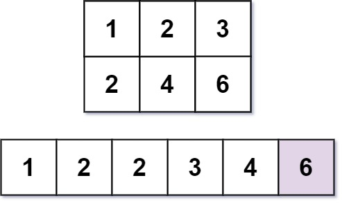

668. 乘法表中第k小的数
二分答案 x：count(x) = 表里 ≤ x 的个数 = 各行 min(x/i, n) 之和，随 x 单调，找第一个 count ≥ k 的 x。
思路
- 不建表（m×n 可达 9×10⁸），直接二分「第 k 小的值是多少」：
count(x)单调不减。 count(x)逐行数：第 i 行是i, 2i, …, ni，其中 ≤ x 的有min(x/i, n)个，一行一条除法即可。- 二分模板：
count(mid) ≥ k说明答案 ≤ mid（压hi），否则抬lo；lo == hi时即为答案。 - 答案一定是表里真实存在的数（第一个 count ≥ k 的 x 必在表中）。
图解
最优解
1class Solution {2 public int findKthNumber(int m, int n, int k) {3 // 二分答案 x：表里 ≤ x 的个数随 x 单调不减，找第一个 ≥ k 的 x4 int lo = 1, hi = m * n;5 while (lo < hi) {6 int mid = (lo + hi) / 2;7 if (count(mid, m, n) >= k) hi = mid; // 够 k 个：答案在 mid 或更小8 else lo = mid + 1; // 不够：答案更大9 }10 return lo;11 }12 13 // 乘法表里 ≤ x 的个数：第 i 行是 i,2i,…,ni，其中 ≤ x 的有 min(x/i, n) 个14 private int count(long x, int m, int n) {15 int cnt = 0;16 for (int i = 1; i <= m; i++) cnt += Math.min(x / i, n);17 return cnt;18 }19}题目
几乎每一个人都用 乘法表。但是你能在乘法表中快速找到第 k 小的数字吗？
乘法表是大小为 m x n 的一个整数矩阵，其中 mat[i][j] == i * j（下标从 1 开始）。
给你三个整数 m、n 和 k，请你在大小为 m x n 的乘法表中，找出并返回第 k 小的数字。
示例 1：

输入：m = 3, n = 3, k = 5 输出：3 解释：第 5 小的数字是 3 。
示例 2：

输入：m = 2, n = 3, k = 6 输出：6 解释：第 6 小的数字是 6 。
提示：
1 <= m, n <= 3 * 1041 <= k <= m * n
题面取自力扣当前版本。
数据快照 2026-11-04。题面版权归力扣所有，本站点仅供本人学习使用，请勿对外发布。